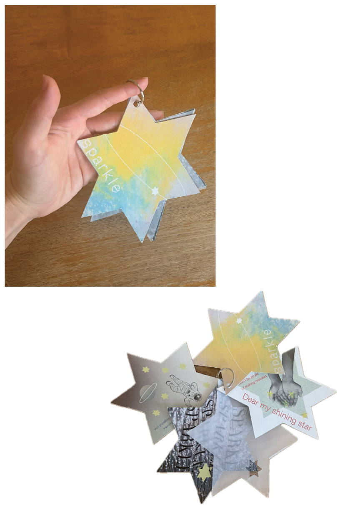

WORKS
作品
ZINE
造形基礎 Zine制作

[制作期間] 約1ヶ月
[制作ソフト] Illustrator・Photoshop・procreate
山梨県立美術館で行われたZINEフェスタに展示するため、「煌めき」をテーマに制作したZINE（小冊子）です。
クレヨンなどのアナログ画材を用い、画材ならではの質感や風合いを活かして表現しました。
また、自分で撮影した写真をPhotoshopで編集し、素材として取り入れています。アナログとデジタルの表現を組み合わせながら、「煌めき」を感じられる世界観を構成しました。
リングで一つにまとめ、星をモチーフにしたページを広げられる仕掛けを取り入れることで、手に取ってページを開く楽しさも感じられるZINEを目指しました。